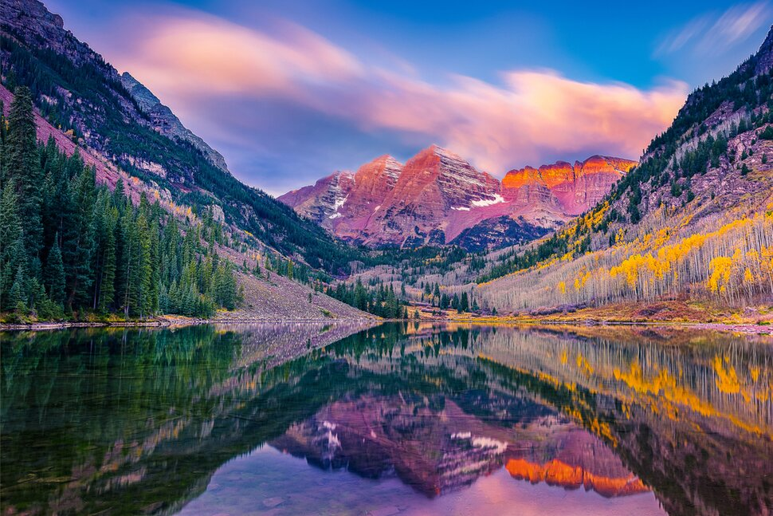

Asher DeCrescenzo | WDD 130
Hello there! My name is Asher DeCrescenzo. I am from Denver, Colorado! The picture to the right is of me and my to be fiance (once she returns from her mission)! I like to code, for fun and for school, I like to game, and read. I am a online student through BYU-Idaho.
Colorado -- My Home State

Colorado, a western U.S. state, has a diverse landscape of arid desert, river canyons and snow-covered Rocky Mountains, which are partly protected by Rocky Mountain National Park. Elsewhere, Mesa Verde National Park features Ancestral Puebloan cliff dwellings. Perched a mile above sea level, Denver, Colorado’s capital and largest city, features a vibrant downtown area. The region has been inhabited by Native Americans and their ancestors for at least 13,500 years and possibly much longer. The eastern edge of the Rocky Mountains was a major migration route for early peoples who spread throughout the Americas. In 1848, much of the Nuevo México region was annexed to the United States with the Treaty of Guadalupe Hidalgo. The Pike's Peak Gold Rush of 1858–1862 created an influx of settlers. On February 28, 1861, U.S. President James Buchanan signed an act creating the Territory of Colorado, and on August 1, 1876, President Ulysses S. Grant signed Proclamation 230 admitting Colorado to the Union as the 38th state. The Spanish adjective "colorado" means "colored red" or "ruddy". Colorado is nicknamed the "Centennial State" because it became a state one century (and four weeks) after the signing of the United States Declaration of Independence.